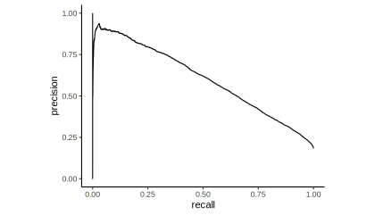

Original Code
The code is almost identical to the original code that can be found on github.
Download caret object from github
okc_glm_tkeyword.RData was created by the caret::train() function, you can reproduce it by using the code on github.
Alternatively you can download the caret object from here and load it into the global environment by running the following command:
load("okc_glm_keyword.RData")Creating Performance Metrics Curves with yardstick
<div class="panel-name">ROC</div>library(yardstick)
library(ggplot2)
library(magrittr)
glm_keyword$pred %>%
roc_curve(obs, stem) %>%
autoplot() +
theme_classic()
<div class="panel-name">Precision Recall</div>library(yardstick)
library(ggplot2)
library(magrittr)
glm_keyword$pred %>%
pr_curve(obs, stem) %>%
autoplot() +
theme_classic()